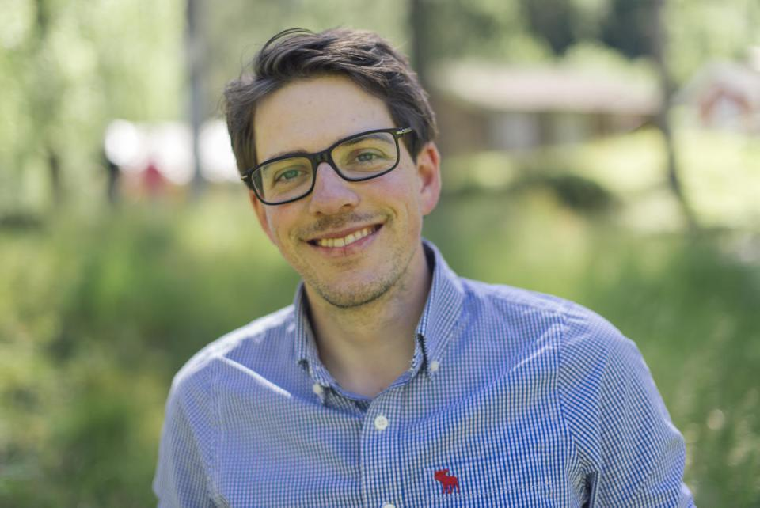

Politikk · Tyskland
Et høyreekstremt parti vant valget i Sachsen-Anhalt
Hvordan kunne AfD bli den største politiske kraften i Sachsen-Anhalt?
Innledning
43,8 %
Sachsen-Anhalt
6. september 2026
Hvorfor?

Valget
Hva skjedde?
43,8 %
Det tyske partiet AfD (Alternativt for Tyskland) ble det største partiet i delstatsvalget i Sachsen-Anhalt, med 43,8 prosent av stemmene, skriver BBC.
I delstatsforsamlingen hadde partiet likevel ikke nok seter til et absolutt flertall. Ingen av de store partiene ønsker å samarbeide med dem. Valget ble holdt 6. september, skriver Deutsche Welle.
Valgresultatet har fått betydelig oppmerksomhet både i Tyskland og resten av Europa. I følge BBC er AfD regnet som høyre-ekstremistisk av innenlandsk sikkerhetstjeneste.
Sachsen-Anhalt er fortsatt en relativt liten delstat. Når et parti med så stor oppslutning blir omtalt slik, melder spørsmålet seg igjen.
Problemene
Hva mener tyskerne er de viktigste politiske problemene?
For å forstå hva som skaper denne driven mot høyresiden i Tyskland, kan vi se på hva innbyggerne mener er landets største problemer og utfordringer.
I undersøkelsen under, fra Statista og ARD-DeutschlandTREND i november 2025, oppga 32 prosent innvandring og flyktninger som ett av de viktigste politiske problemene. 28 prosent oppga økonomi. Det betyr ikke at 32 prosent mener innvandring er det ene største problemet. Respondentene kunne nevne to.
- Innvandring / flyktninger 32 %
- Økonomi 28 %
- Sosial urettferdighet / fattigdom 18 %
- Miljø / klimaendringer 14 %
- Pensjon / alderdomssikring 10 %
- Væpnede konflikter / fred / utenrikspolitikk 9 %
- Utdanning / skole / yrkesopplæring 8 %
- Indre sikkerhet / kriminalitet / terror 8 %
- Helsevesen / medisinsk behandling / pleie 7 %
- Politisk fremmedgjøring / politikerforakt 6 %
Kilde: Statista / ARD-DeutschlandTREND, november 2025. Undersøkelsen er basert på 1 300 respondenter. Hver respondent kunne velge opptil to svaralternativer.
Begge temaene står sentralt i den politiske debatten, og AfD har gjort begge til viktige områder for sin politikk. Når et samfunn står overfor slike problemer, ser befolkningen raskt etter noen med tydelige og klare løsninger.
To stemmer
De er ikke særlig politisk interessert
Vi har snakket med to tyske utvekslingsstudenter for å høre hva de tenker om valget, AfD og hvordan dette har påvirket dem. De sier selv at de ikke er særlig politisk interessert hvilket gjorde svarene deres veldig interessante.
Andree
29 år
De var ikke særlig partiske i svarene sine, men la vekt på AfDs holdninger til innvandring, minoriteter og grunnleggende rettigheter. De mente AfD vekker assosiasjoner til Tysklands tidligere mørkere tider. De poengterer også at mange nok stemmer på AfD i mangel på et alternativ og frustrasjon over nåværende styre.
«De andre store partiene kan komme til å bøye seg litt i retning av deres standpunkter for å vinne tilbake velgere, særlig når det gjelder innvandring.»
Lennard
25 år
«Jeg håper at alle som stemmer på dem i protest mot den nåværende regjeringen, våkner opp og ser hvem de gir makt til.»
At AfD fikk så stor oppslutning mente de det var en skummel utvikling for Tyskland og noen minoriteters rettigheter, eventuelt om andre partier føler seg nødt til å følge noe av den høyreekstreme politikken for å få stemmer.
Partiets egne ord
Så hva tilbyr egentlig AfD?
Dette er hvordan AfD selv beskriver deler av partiets politikk.
- Direkte demokrati
- Lavere skatt
- Mindre byråkrati
- Mindre stat
- Strengere innvandring
AfD sier de ønsker en mindre stat, og at de politiske partiene skal få mindre makt. Da vil makten gå videre til folket. De ønsker et direkte demokrati med folkeavstemning, og at statsoverhodet skal velges direkte av folket, ikke et parti. AfD mener partiene har hevet seg over befolkningen og ønsker å endre dette.
Samtidig ønsker AfD å gjennomføre ny skattepolitikk med mindre skatt, reduksjon av byråkrati og mere muligheter for små og mellomstore bedrifter. Når det gjelder utenrikspolitikk mener AfD at en selvstendig stat skal få slippe innblanding av andre stater og særlig fra andre ikke-statlige organisasjoner.
De er strenge når det gjelder innvandring, skriver AfD selv. De ser på både massemigrasjon fra Afrika og Islam som fiendtlig. De ønsker negativ innvandring på grunn av den belastende effekten det allerede har vært for Tyskland og sier:
"Internasjonal islamsk terrorisme er en alvorlig trussel mot det internasjonale samfunnet. Dens fremvekst og spredning må bekjempes med alle tilgjengelige juridiske midler"
Et annet lag
Men innvandring og økonomi forklarer ikke alt.
Ifølge Sondre Lindahl, lærer i internasjonal politikk ved Høgskolen i Østfold, er det likevel ikke mulig å forklare AfDs framgang med innvandring og økonomi alene. Han mener valgresultatet må ses i sammenheng med Sachsen-Anhalts historie som en del av det tidligere Øst-Tyskland.
Etter gjenforeningen forsvant mange av industriarbeidsplassene som tidligere hadde vært fundamentet i lokalsamfunnene. Selv om Tyskland i dag er samlet, er det fremdeles store økonomiske og sosiale forskjeller mellom øst og vest.
Tidslinjen følger dette poenget. Den er ikke en egen statistikk.
- 1990 Gjenforeningen
- Etterpå Endringer i industrien
- Lokalsamfunnene Tap av mange tradisjonelle industriarbeidsplasser
- Øst og vest Vedvarende økonomiske og sosiale forskjeller
- 2026 43,8 %

Analysen
Sondre Lindahl
AfD er ikke populært fordi tyskerne liker nynazister. Partiet gjør det bra fordi de etablerte partiene ikke har klart å komme med politiske løsninger som ivaretar folk.
Han sier at mange velgere opplever at de etablerte partiene verken representerer dem eller tilbyr konkrete løsninger på problemene deres. Lindahl trekker særlig frem misnøyen med de etablerte partiene. Han spør hva som skjer når folket ikke føler at politikerne representerer dem.
Kritikk
Hvem er «folket»?
Dette er kritikk av AfD. Det er ikke partiets egen beskrivelse, ikke sitatene fra Andree og Lennard, og ikke Lindahls analyse.
AfD sin politikk er veldig annerledes enn det som har blitt ført i Tyskland og Europa generelt på veldig lenge. Det er kanskje konsekvensene av forandringene vi har sett i verden de siste årene som gjør at folket ser etter nye løsninger. Politiske problemer har ofte nyanserte løsninger som kan være vanskelig å se. Men AfD lover store, tydelige og ekstreme løsninger.
Noen mener at AfDs politikk setter folket opp mot politikere. Og når AfD vil være «folkets» parti, er det mange som spør hvem AfD mener «folket» er. Fordi de har en veldig nasjonalistisk politikk og har gitt utsagn om at Tyskere er en veldig spesifikk gruppe mennesker. De er også anklaget for å undergrave uavhengige institusjoner som domstoler, medier og minoritetsvern.
Så mens AfD ønsker et klart, tydelig og direkte demokrati og lover tydelig løsninger på de største problemene i Tyskland, står de overfor mye kritikk som handler om konsekvensene av deres politikk. Valgresultatet viser likevel at AfD har klart å nå fram til en stor gruppe velgere som ikke føler seg hørt av de etablerte partiene.
43,8 %
Men hvorfor?
Oppslutningen kan ikke nødvendigvis forklares med én sak alene.
Hva kan forklare støtten til AfD?
- Innvandring
- Økonomi
- AfDs politiske budskap
- Regional historie
- Politisk representasjon
- Misnøye med de etablerte partiene
Hva skjer videre?
Hvordan resten av det politiske Tyskland møter velgere som ikke føler seg hørt, står igjen som et åpent spørsmål.